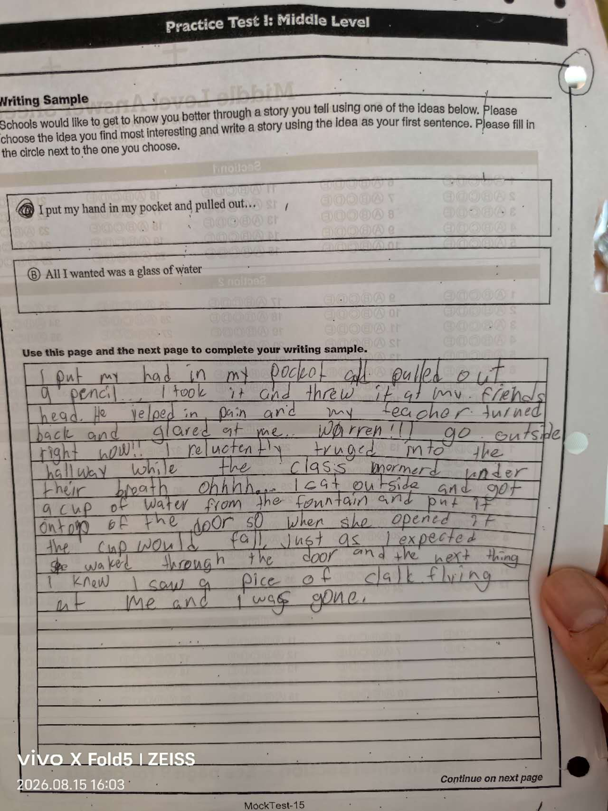

Transcribed exactly as written — spelling and punctuation untouched. Dotted red = as it appears on the page.

Fast opening. You didn’t waste a single word explaining who you are or where you were — you just started. Keep that instinct.
Why? Give me one reason and the whole story improves. He’d been kicking my chair all morning.
Six words — and now the reader is on your side instead of against you.
Yelped is exactly right. Not “screamed,” not “yelled” — you picked the precise sound. This is the strongest thing in your writing.
Glared does the work of “looked at me angrily.” You’re choosing powerful verbs instead of stacking adjectives — that’s an advanced habit, keep it.
Speech needs quotation marks, a capital letter, and its own line: “Warren! Go outside — right now!”
Also: one exclamation mark is louder than three. Trust the words.
Trudged is an excellent verb — but nobody trudges eagerly. Reluctantly repeats what trudged already said. Cut it. (Both are also misspelled — see the spelling list.)
This is a real detail from a real classroom, and it puts the reader in the room with you. Small, specific, true. More of this.
You were sent to the hallway, then you’re suddenly outside. Pick one. Also two “got”s in one sentence — swap one for a better verb (filled / grabbed).
You folded the other prompt — the glass of water — into your story as the revenge device. That’s smart thinking under time pressure, and it makes the story feel planned.
You spent four lines building the trap and half a line on it going off. We never see the water hit. That is the moment the whole story was heading toward. Slow down here — this deserves three or four sentences, not half of one.
Good instinct for a punchy last line, but what happened? Did you run? Get sent to the office? Make it clear and still keep it short.
Notice the pattern: almost every mistake is on an ambitious word. That’s a good sign — you’re reaching past your spelling level, which is exactly what you should be doing. Just reread once at the end and circle anything you’re unsure of.
| You wrote | Should be | Remember it by… |
|---|---|---|
| had | hand | a slip — the “n” got dropped |
| pockot | rhymes with rocket — same ending | |
| mv | my | handwriting, not spelling — write the “y” tail |
| friends head | friend’s head | the head belongs to the friend → apostrophe + s |
| teachor | teacher | one who teaches → teach + er |
| reluctently | reluctantly | reluctant → reluctantly |
| truged | trudged | trudge — like judge, nudge, budge |
| mormerd | murmured | mur–mur–ed: the same sound twice |
| ontop | on top | two words, always |
| waked | walked | the silent “l” — walk, talk, chalk |
| pice | piece | a piece of pie |
| clalk | chalk | ch–alk, like walk and talk |
Same story, same jokes, same ending — with the fixes applied. Green marks what was added. Note how much of it is just slowing down at the good bits. This is a model, not the “right answer” — yours should sound like you.
I put my hand in my pocket and pulled out a pencil. Daniel had been kicking the back of my chair since first period, and I had asked him twice. I took it and threw it at his head.
He yelped in pain. My teacher turned and glared at me. “Warren! Outside. Right now.”
I trudged into the hallway while the class murmured under their breath, “Ooooh.” The door clicked shut behind me and the corridor went very quiet. I knew I deserved it, and I still couldn’t help myself. I filled a paper cup at the fountain and balanced it on top of the doorframe, so that when she opened the door the cup would tip.
Then I waited. I could hear her chair scrape. I could hear thirty people pretending to read. The handle turned.
She walked through the door and the cup came down on her shoulder like a small, cold surprise. The whole class went silent. Water ran off her sleeve and dripped onto the tile, one drop at a time.
She didn’t even shout. The next thing I knew, a piece of chalk was flying at me — and I was already running.
Remember that a real school reads this. In this version you hurt a friend for no reason, booby-trap your teacher, and never once suggest you know you’re in the wrong. The writing is good, but the narrator isn’t someone a reader likes.
Same jokes, same trap, same ending — just give him a reason and one flicker of guilt, and he goes from “kid who causes trouble” to “kid worth reading about.” It costs you two sentences.
Two minutes at the end of every writing sample. Tap to tick.
Warren, you can write. You have a real ear for the exact verb — yelped, glared, trudged, murmured — and most kids your age would have written “he screamed” and moved on. You also have comic timing, and that isn’t something anyone can teach you.
Three things are keeping this from being a strong piece rather than a promising one. You rush the best parts: four lines of setup, half a line of payoff. Your spelling costs you twelve marks — though notice they’re all on your ambitious words, which is a compliment, not an insult. And it’s half-finished in length: two pages given, just over half a page used.
None of those are talent problems. They’re habit problems, and habits are the easy kind to fix. Run the checklist above every single time and this becomes a much stronger piece of writing very quickly.
Marked 15 August 2026 · ISEE Middle Level Practice Test 1 · Writing Sample